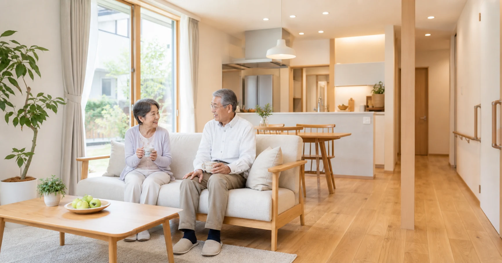

まず一番大切なことを。リフォーム業界で働く人の大多数は、真面目で誠実です。私は実家の工務店で10年、現場に立ってきました。この記事は「リフォームは怖い」と身構えてもらうためのものではありません。それでも「この金額、適正なんだろうか」という不安は自然なもの。今回は、暮らす人が安心していい業者と出会うための知識を、業界の内側からお届けします。
1. まず知っておきたい、相談データの現実
国民生活センター「訪問販売・点検商法の相談傾向」（公表年：2025年）によると、訪問販売リフォームの相談では、屋根工事の「点検商法」型も目立ちます。「業者は怖い」と身構えるのではなく、安心できる一社を選ぶための知識を持つこと。順番に見ていきましょう。
2. 身を守る知識①――「不安を煽って、その場で契約」には立ち止まる
突然の「無料点検」から不安を煽り契約を勧める「点検商法」、「今日だけ大幅値引き」といった即決を促す誘い文句。出てきたら、いったん立ち止まる合図です。対処はシンプル、「その場では決めない」。信頼できる事業者であれば、考える時間を求めても、いやな顔ひとつせず受け止めてくれます。
3. 身を守る知識②――もし契約しても、あきらめない（クーリングオフ）
訪問販売でリフォーム契約をした場合、法定の契約書面を受け取った日を1日目として8日以内であれば無条件で契約を解除できます。書面が渡されていない・不備がある場合は、8日を過ぎても解除できる可能性があります。困ったときは消費者ホットライン「188（いやや！）」へ。
4. 信頼できる業者は「客観指標」で見分けられる
①建設業許可があるか（建築一式工事以外は500万円未満など、軽微な工事を除いて必要／出典3）②リフォーム瑕疵保険に対応できるか③住宅リフォーム事業者団体登録制度の登録団体に所属しているか④相見積もりを最低2〜3社から⑤見積書の「中身」を見る――「一式」ばかりでなく「数量・単価・仕様」が明記されているか⑥施工実績とアフター保証。適正価格とは最安値ではなく"内容に見合った価格"のことです。
5. 契約前チェックリスト
- 会社の所在地が実在するか（住所・固定電話・ホームページ）
- 建設業許可や各種登録・保険対応の有無
- 相見積もりを2〜3社から、同じ条件で比較したか
- 見積書に「数量・単価・仕様」が明記され、内訳がわかるか
- 手付金・前金の割合が過大でないか
- その場で即決を求められていないか
6. 一番安心なのは「家族が一枚かむ」こと
訪問販売の勧誘は、日中ひとりで過ごすことの多いご高齢者や、人を信じやすい親御さんが狙われやすいのも事実です。だからこそ「家の工事や大きな契約の話が来たら、その場で返事をせず、必ず一度相談してね」――離れて暮らす親御さんと、この約束を交わしておいてください。頭ごなしに止めるのではなく、断る"口実"を家族がそっと用意してあげるわけです。電話のそばに消費者ホットライン「188」をメモしておくのもおすすめです（第4回・第6回の見守りの総仕上げ）。

よくある質問
突然の「無料点検」と言われたら、どうすればいいですか？
＋
突然の訪問による点検の申し出は、いったん立ち止まって対応するのが安心です。本当に点検が必要と感じたら、自分で選んだ信頼できる業者に、あらためて依頼するのが確実です。
その場で契約してしまいました。取り消せますか？
＋
訪問販売なら、契約書面を受け取った日から8日以内はクーリングオフで無条件解除できます。書面が交付されていない・不備がある場合は8日を過ぎても解除できる可能性があります。
提示された価格が適正か、どう判断すればいいですか？
＋
相見積もりを2〜3社から、同じ条件で取って比べるのが基本です。ただし最安値が正解とは限りません。内訳の明確さや工事内容とのバランスで判断してください。迷うときは、住宅リフォーム・紛争処理支援センター（すまいるダイヤル）の「リフォームの見積書に関する相談」も活用できます（https://www.chord.or.jp/reform/index.html）。
見積書のどこを見れば安心できますか？
＋
「一式」表記ばかりで内訳がわかりにくい見積書は、内容を尋ねましょう。工事項目ごとに「数量・単価・仕様」が明記された見積書が安心です。
信頼できる業者か、契約前に確認できる客観指標はありますか？
＋
あります。建設業許可の有無、リフォーム瑕疵保険の登録事業者かどうか、住宅リフォーム事業者団体登録制度の登録団体に所属しているか、施工実績やアフター保証の明確さなど。
高齢の親が心配です。何をすればいいですか？
＋
「大きな契約の前は、必ず一度、家族に相談する」と約束しておくのが最も効果的です。電話のそばに消費者ホットライン「188」をメモしておくのも有効です。
出典・参考資料を見る
- 独立行政法人国民生活センター「訪問販売・点検商法の相談傾向」（2025年）
- 特定商取引法における訪問販売のクーリング・オフ制度（特定商取引法、最終改正2025年）
- 国土交通省「建設業の許可とは」（2025年改訂）
- 一般社団法人住宅瑕疵担保責任保険協会「リフォーム瑕疵保険」（2026年参照）
- 住宅リフォーム事業者団体登録制度（国土交通省告示、2023年）

この記事を書いた人｜エイスケ
1986年生まれ、40歳。実家の建築業・不動産に10年間従事したのち、教育の世界へ。住宅と教育、両方のプロの視点から「豊かな暮らし」をテーマに忖度なく切り込みます。※本コラムは筆者個人の見解・経験に基づくものです。最終的な判断は各分野の専門家にご相談ください。